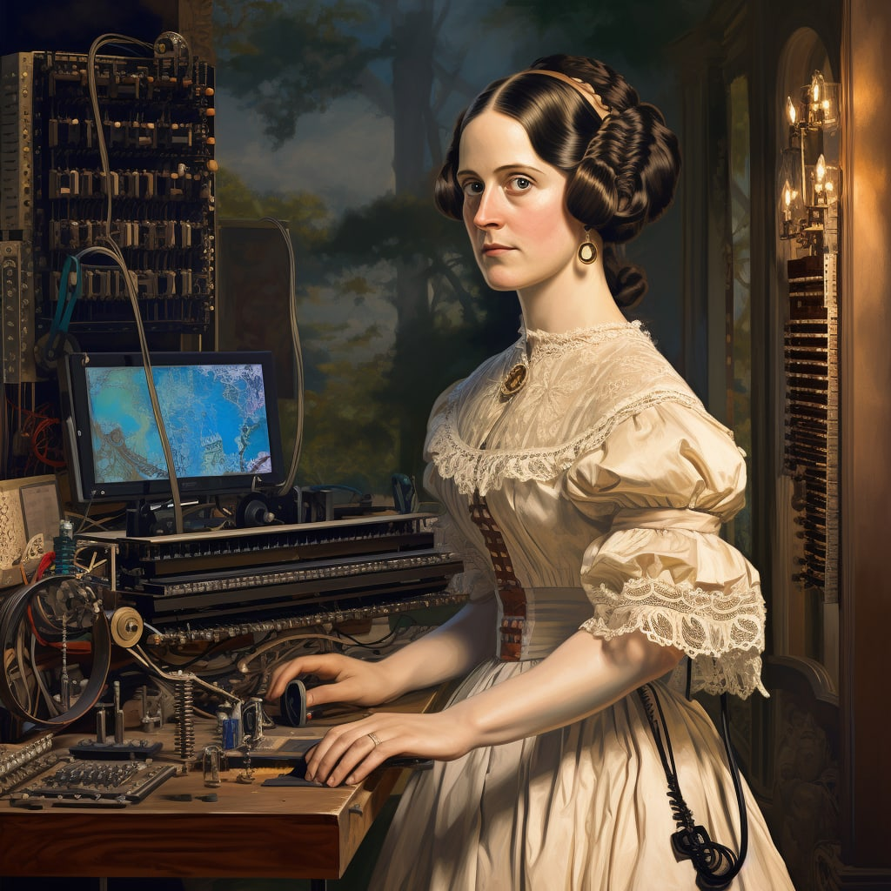

Work

Throughout her life, Lovelace was strongly interested in scientific developments and fads of the day, including phrenology and mesmerism. After her work with Babbage, Lovelace continued to work on other projects. In 1844, she commented to a friend Woronzow Greig about her desire to create a mathematical model for how the brain gives rise to thoughts and nerves to feelings ("a calculus of the nervous system"). She never achieved this, however. In part, her interest in the brain came from a long-running pre-occupation, inherited from her mother, about her "potential" madness. As part of her research into this project, she visited the electrical engineer Andrew Crosse in 1844 to learn how to carry out electrical experiments. In the same year, she wrote a review of a paper by Baron Karl von Reichenbach, Researches on Magnetism, but this was not published and does not appear to have progressed past the first draft.In 1851, the year before her cancer struck, she wrote to her mother mentioning "certain productions" she was working on regarding the relation of maths and music
Lovelace first met Charles Babbage in June 1833, through their mutual friend Mary Somerville. Later that month, Babbage invited Lovelace to see the prototype for his difference engine.She became fascinated with the machine and used her relationship with Somerville to visit Babbage as often as she could. Babbage was impressed by Lovelace's intellect and analytic skills. He called her "The Enchantress of Number". In 1843, he wrote to her: Forget this world and all its troubles and if possible its multitudinous Charlatans—every thing in short but the Enchantress of Number
During a nine-month period in 1842–43, Lovelace translated the Italian mathematician Luigi Menabrea's article on Babbage's newest proposed machine, the Analytical Engine.With the article, she appended a set of notes. Explaining the Analytical Engine's function was a difficult task; many other scientists did not grasp the concept and the British establishment had shown little interest in it. Lovelace's notes even had to explain how the Analytical Engine differed from the original Difference Engine. Her work was well received at the time; the scientist Michael Faraday described himself as a supporter of her writing
The notes are around three times longer than the article itself and include (in Note G),in complete detail, a method for calculating a sequence of Bernoulli numbers using the Analytical Engine, which might have run correctly had it ever been built (only Babbage's Difference Engine has been built, completed in London in 2002). Based on this work, Lovelace is now considered by many to be the first computer programmer and her method has been called the world's first computer program. Others dispute this because some of Charles Babbage's earlier writings could be considered computer programs. Note G also contains Lovelace's dismissal of artificial intelligence. She wrote that "The Analytical Engine has no pretensions whatever to originate anything. It can do whatever we know how to order it to perform. It can follow analysis; but it has no power of anticipating any analytical relations or truths." This objection has been the subject of much debate and rebuttal, for example by Alan Turing in his paper "Computing Machinery and Intelligence". Most modern computer scientists argue that this view is outdated and that computer software can develop in ways that cannot necessarily be anticipated by programmers.
Lovelace and Babbage had a minor falling out when the papers were published, when he tried to leave his own statement (criticising the government's treatment of his Engine) as an unsigned preface, which could have been mistakenly interpreted as a joint declaration. When Taylor's Scientific Memoirs ruled that the statement should be signed, Babbage wrote to Lovelace asking her to withdraw the paper. This was the first that she knew he was leaving it unsigned, and she wrote back refusing to withdraw the paper. The historian Benjamin Woolley theorised that "His actions suggested he had so enthusiastically sought Ada's involvement, and so happily indulged her ... because of her 'celebrated name'." Their friendship recovered, and they continued to correspond. On 12 August 1851, when she was dying of cancer, Lovelace wrote to him asking him to be her executor, though this letter did not give him the necessary legal authority. Part of the terrace at Worthy Manor was known as Philosopher's Walk; it was there that Lovelace and Babbage were reputed to have walked while discussing mathematical principles